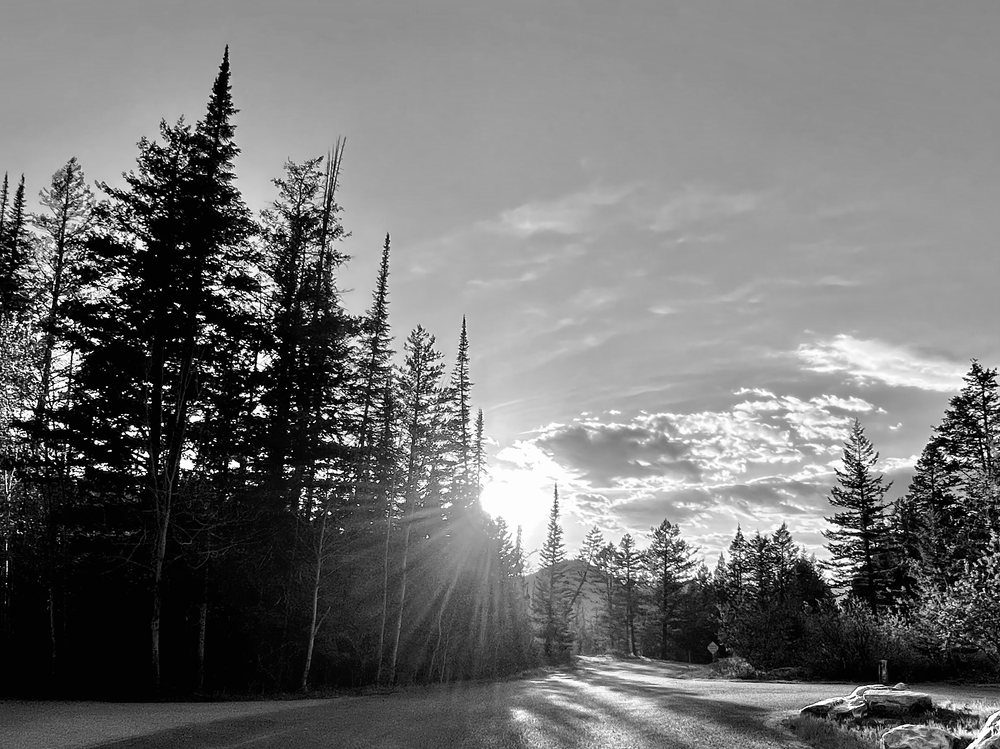

Idaho is a paradise for outdoor enthusiasts offering breathtaking hiking trails. The state offers areas such as the Sawtooth Mountains to the scenic waterfalls of Shoshone Falls. Idaho offers a diverse landscape that provides endless opportunities for adventure. Whether you are just learning how to hike or you are an expert hiker the state offers something for everyone.Idaho is a paradise for outdoor enthusiasts offering breathtaking hiking trails.
